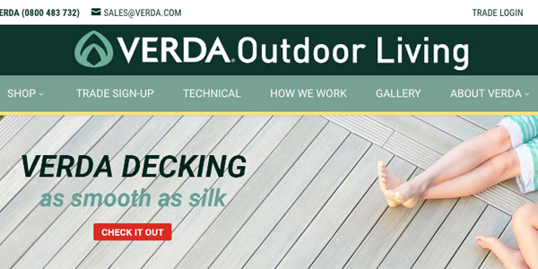

I'm from New Zealand
Hi, I'm Holly - a qualified graphic designer, a digital marketer, and an aspiring front-end web developer.
I have many years experience in both business and marketing administration, and hope to one day be a sought-after web developer. I love the problem-solving aspect of development; it's sometimes frustrating but also invigorating when a problem is fixed!
Personally, I am an outgoing and friendly person who makes a pretty good chocolate brownie!
To be a freelance web developer known for my technical skills and in demand for web work in the area that I live in. My goal is to learn:
I'd like to work from home to enable a healthy work-life balance, and to allow me more time with my children.
Diploma in Graphic Design
Media Design School, Auckland, 2009
Diploma in Communications
Waiariki Polytech, Rotorua, 2014
TechDegree in Front End Development
Treehouse, Online 2016
I have worked as a graphic designer for approximately 10 years and recently have moved into Wordpress management and development. For the past 2 years I have been employed as a digital marketer doing everything from SEO and social media management to metric reporting from Google Analytics and WooCommerce.
Website header design example